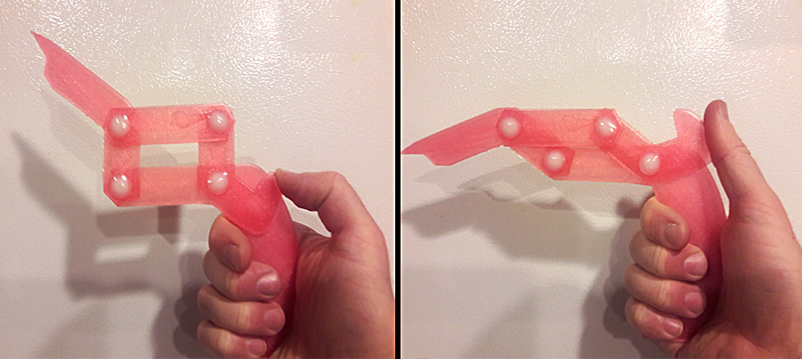

A4: Moving parts

Write up of process: 3D print assembly with moving parts
- Brainstormed design ideas with pencil and cardboard
- Did extensive hand made prototypes to validate structural integrity
- With prototype validated, created a new files OnShape
- Using calipers, measured width of cardboard = 3mm
- Measured the hole for the press fit rivets = 6mm width
Design of shapes in OnShape
- Carefully measured cardboard prototype
- Created the parts exact to the measurements in OnShape
- Exported the parts from OnShape as .stl files
- Imported .stl files into XYZ print for Da Vinci Mini W+
- Printed parts using Da Vinci Mini W+
Problems in project and how I resolved them
- I was very careful to build a fully functional prototype in cardboard first
- It took many attempts in cardboard to get the thumb trigger to function in such a way that I could make the "Finger" point
- Encountered my first major problem using the printer. It would not print and for quite a while I was stumped
- Ultimately I realized it needed extensive cleaning, and with such poor documentation it was hard to figure it out
- In the end I was able to clean the lines and print head in such a way the parts would print again
DaVinci Mini W+ Machine settings
- Imported .stl files from OnShape
- Used XYZ printing interface for the Da Vinci Mini
- Success! The connecting parts printed as I hoped for
Assembly functionality test
- The following video shows the construction of the assembly and how the moving parts work together successfully
Source files
- Onshape links
- Download source file
- Download source file
- Download source file
- Download source file
- Exported Onshape files as .stl
- Download source file
- Download source file
- Download source file
- Download source file
- Special thanks to @Christa Keizer, who recorded the demo from Joshua and posted it for the class